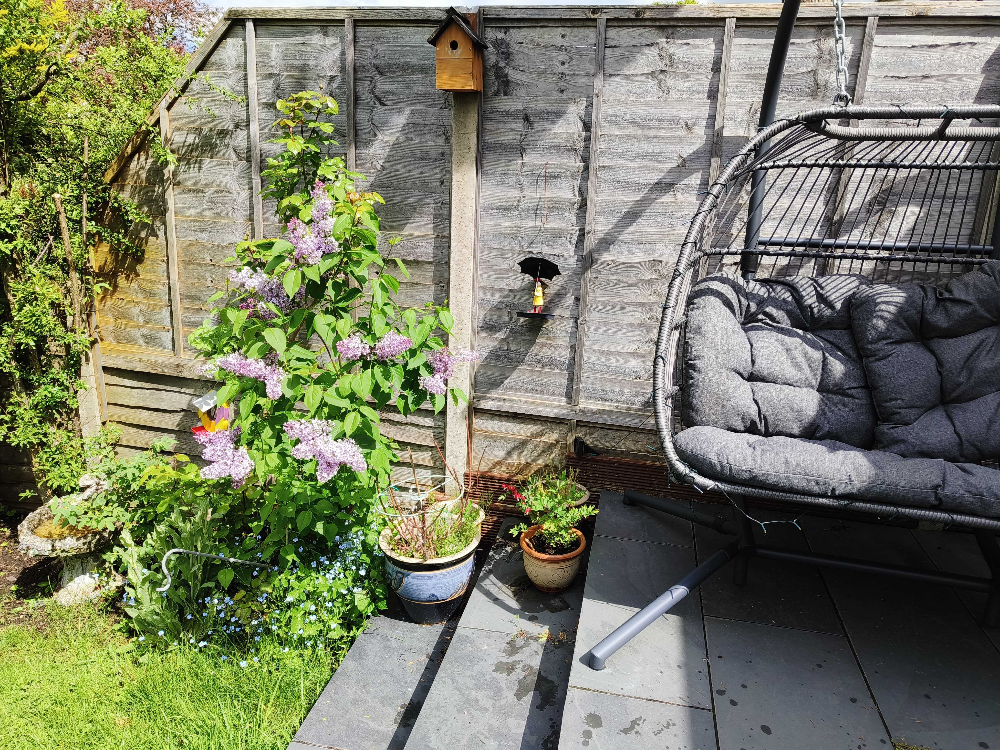

My Blogs
Plants help ease the mind
If you've ever felt a sense of calmness, happiness, or peace while spending time with nature, then you already know how plants can help ease the mind. As it turns out, this isn't just a coincidence - there are numerous studies that suggest plants have a positive impact on our mental wellbeing.
Whether you're sitting in a park, hiking in the woods, or simply tending to your houseplants, spending time with nature can have a profound impact on your mood, stress levels, and overall mental health.
Here are a few ways that plants can help ease the mind:
1. Reduced stress and anxiety
Studies have shown that spending time with plants can lower levels of the stress hormone cortisol, leading to a decrease in anxiety and an increase in feelings of calmness and relaxation.
2. Improved mood and happiness
Research suggests that exposure to nature can boost mood and increase feelings of happiness, leading to an overall improvement in mental wellbeing.
3. Increased focus and concentration
The natural colors and patterns of plants can help to improve focus and concentration, making them a great addition to home and office environments.
4. Better sleep quality
Plants release oxygen into the air, which can improve air quality and lead to better sleep quality. This is especially true for plants such as lavender, which have been shown to have a calming effect and reduce anxiety levels.
Whether you're an experienced gardener or just starting out with a few houseplants, spending time with plants can have a powerful impact on your mental health and wellbeing. So, the next time you're feeling stressed or overwhelmed, take a few moments to sit down with your favorite plant and enjoy the calming, healing power of nature.